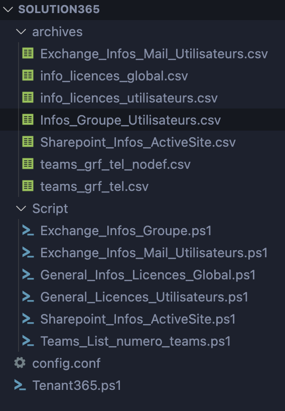

Solution365
Objectif :
Développer un logiciel de récupération et de traitement des données provenant d'Office 365
Contexte :
Projet réaliser au cours du stage de premiere années au sein de ECAR
Technologies utilisées :
PowerShell
Compétences acquises
- PowerShell
- Office 365
Qu'est ce que Solution365 ?
Solution365 est une une série de script PowerShell , permettant de récuperer certaines données sur le tenant office 365 nottament :
- Le stockage des boite mails
- Les licences attribué aux utilisateurs
- La liste des SharePoint active
- La liste des numéros SDA des utilisateur
- Les groupe Utilisateurs
Pré-requis :
Il est nécessaire d'avoir un compte administrateur sur le tenant Office 365
Posséder les droits administrateur de la machine (Installation module powershell)
Installation :
Il est nécessaire d'installer le module MSOnline pour pouvoir utiliser les scripts
Il est possible de l'installer en lancant le script qui detecte si les modules ont été installer sur la machine SINON les installe
Utilisation :
Il est possible d'utiliser les scripts de deux manières différentes :
- En lancant le script et en remplissant manuellement les informations de connexion
- En remplissant le fichier de config pour réaliser l'opération automatiquement
le fichier config doit contenir les informations suivante:
- Le nom de domaine du tenant
- le mail de connexion
- Le mot de passe
Il est aussi possible de lancer les scripts individuellement
Output
Le logiciel produit donc en sortie les fichiers csv contenant les informations des partie demander sous forme de tableau
Le Code
Voici l'arborescence du projet :
Voici le code du script principal Tenant365:
# Fonction : Detecte si les modules sont installé sinon les installe.
# ExchangeOnlineManagement
if (-not (Get-Module -ListAvailable -Name ExchangeOnlineManagement)) {
Install-Module ExchangeOnlineManagement
}
# MsOnlineManagement
if (-not (Get-Module -ListAvailable -Name MSOnline)) {
Install-Module MsOnline
}
# MicrosoftTeams
if (-not (Get-Module -ListAvailable -Name MicrosoftTeams)) {
Install-Module -Name MicrosoftTeams
}
# AzureAd
if (-not (Get-Module -ListAvailable -Name AzureAD)) {
Install-Module AzureAd
}
# SharePoint
if (-not (Get-Module -ListAvailable -Name Microsoft.Online.SharePoint.PowerShell)) {
Install-Module -Name Microsoft.Online.SharePoint.PowerShell
}
# Config :
$listParam = @{}
Get-Content .\config.conf | foreach-object {
$p = [regex]::split($_, '=');
if (($p[0].CompareTo("") -ne 0)) {
if (($p[0].StartsWith("#") -ne $True) -and ($p[0].StartsWith("[") -ne $True)) {
$listParam.Add($p[0], $p[1])
}
}
}
#$scToken = ConvertTo-SecureString $listParam.ScToken -AsPlainText -Force
#$psCred = New-Object System.Management.Automation.PSCredential -ArgumentList ($listParam.username, $scToken)
# Connection Aux tenant Microsoft avec le fichier config.conf
#Connect-ExchangeOnline -Credential $psCred
#Connect-MsolService -Credential $psCred
#Connect-AzureAD -Credential $psCred
#Connect-MicrosoftTeams -Credential $psCred
#Connect-SPOService -Credential $psCred -Url $listParam.TenantName
# Connection Aux tenant Microsoft sans le fichier config.conf
Connect-ExchangeOnline
Connect-MsolService
Connect-AzureAD
Connect-MicrosoftTeam
# Lancement des differents Scripts
&.\Script\Exchange_Infos_Groupe.ps1
&.\Script\Exchange_Infos_Mail_Utilisateurs.ps1
&.\Script\General_Infos_Licences_Global.ps1
&.\Script\General_Licences_Utilisateurs.ps1
&.\Script\Sharepoint_Infos_ActiveSite.ps1
&.\Script\Teams_List_numero_teams.ps1
Voici le code du script Exchange_Infos_Groupe :
# Fonction : Retourne un Csv de chaque groupe d'utilisateurs d'Exchange 365 , comprenant : Le nom du groupe ,l'adresse Mail du groupe ,
# Le(s) proprietaire(s), l'identifiant des membres , et le nom prénom des membres
# Date : 13/06/2022
# Author : Alexis Huet - Ecar
# Important : Néccesite l'utilisation du script Connection Exchange Online pour fonctionner
# Version : 1.0
Connect-ExchangeOnline
# Requete pour récuperer : <Nom Du Groupe> <Adresse Mail du Groupe> <Proprietaire>
$GroupId = Get-UnifiedGroup -ResultSize Unlimited | Select-Object DisplayName , PrimarySmtpAddress, @{Name = "Proprietaire"; Expression = { ($_.ManagedBy) } }
# Titre de Chaque Colonnes du CSV
# Boucle de construction de chaque ligne du document csv
$users = @()
foreach ($group in $GroupId) {
$GroupeMembers = Get-UnifiedGroupLinks -Identity $group.DisplayName -LinkType Members | Sort-Object -Property DisplayName
$user = [pscustomobject]@{
'Nom Groupe' = $group.DisplayName
'Mail Groupe' = $group.PrimarySmtpAddress
'Proprietaire(s)' = $group.Proprietaire
'Identifiant Membres' = $GroupeMembers.Name -join (' ')
}
$users += $user
$GroupeMembers = Get-UnifiedGroupLinks -Identity $group.DisplayName -LinkType Members | Sort-Object -Property DisplayName | Get-Unique
}
# Nom de sortie du document Csv
$users | Export-Csv -Path .\archives\Infos_Groupe_Utilisateurs.csv -Delimiter "," -NoTypeInformation -Encoding Unicode
Voici le code du script Exchange_Infos_Mail_Utilisateurs :
# Fonction : Script pour Exchange , permettant de récuperer et d'exporter la collection utilisateurs mail et la taille de stockage utilisateurs dans un document csv
# Date : 10/06/2022
# Conseil d'utilisation :
# 1. Le traitement des données peux prendre plusieurs minutes selon le nombre de données
# 2. Le délimiter du document csv est un ";"
# IMPORTANT :
# Nécessite d'utiliser le Script Connection Exchange Online avant d'utiliser celui-ci
# Version : 2.0
Import-Module ExchangeOnlineManagement
Connect-ExchangeOnline
#Nom de la compagnie
#Nom des colonnes du document csv
$Output = "Nom Complet;Mail;Storage Used;Total Storage
"
# Requete pour récuperer la taille des adresses Mail de tout les utilisateurs
$StorageSizeTotal = Get-Mailbox -ResultSize Unlimited | Select-Object ProhibitSendReceiveQuota , DisplayName
# Requete pour récuperer l'espace utilisée de chaque utilisateurs
$boxSizeValue = Get-Mailbox -ResultSize Unlimited | Get-MailboxStatistics | Select-Object DisplayName, TotalItemSize
# Requete pour récuperer les adresses mail des utilisateurs
$Mailbox = Get-Mailbox -ResultSize Unlimited | Select-Object DisplayName, PrimarySmtpAddress
$users = @()
# Boucle pour croiser les informations des requetes
foreach ($box in $boxSizeValue) {
foreach ($Mail in $Mailbox) {
if ($box.DisplayName -match $Mail.DisplayName) {
foreach ($Storage in $StorageSizeTotal) {
if ($box.DisplayName -match $Storage.DisplayName) {
# rajoute à liste les 4 infos utilisateur : <Nom Complet> ; <AdresseMail> ; <Mémoire Utilisée> ; <Mémoire Totale>
$Output += $box.DisplayName + ";" + $Mail.PrimarySmtpAddress + ";" + $box.TotalItemSize + ";" + $Storage.ProhibitSendReceiveQuota + "
"
$user = [pscustomobject]@{
'Nom Complet' = $box.displayname
'Adresse Mail' = $Mail.PrimarySmtpAddress
'Taille utilisee' = $box.TotalItemSize
'Taille total' = $Storage.ProhibitSendReceiveQuota
}
$users += $user
}
}
}
}
}
# Retourne un Fichier au format csv contenant la liste de tout les utilisateurs et leurs infos de boite mail
$users | Export-Csv -Path .\archives\Exchange_Infos_Mail_Utilisateurs.csv -Delimiter "," -NoTypeInformation -Encoding Unicode
Voici le code du script General_Infos_Licences_Global :
# Fonction : Exportations des informations des licences du Tenant Microsoft 365
# Date: 16/06/2022
# IMPORTANT : Néccesite l'utilisation du script Connection MSOnline pour fonctionner
# Version : 1.0
# Module pour l'utilisation des méthode MSOnline
Import-Module MSOnline
#Dictionnaire du noms des licences
$Dics = Import-Csv -Path .\Script\Catalogue_licences_Microsoft.csv -Delimiter ','
# Explication = ^.*\:"," | Sert à retirer le nom de l'organisation ex : ENTREPRISE_TEST:POWERBI -> POWERBI
# En Français Commence par n'importe quel caractere et continue jusqu'a terminer par le caractere ':'
# Requête pour récuperer l'identifiant des licences
$IdProduit = Get-MsolAccountSku | Select-Object AccountSkuId |Where-Object {($_.AccountSkuId -clike '*:*')} | ForEach-Object {$_.AccountSkuId -replace "^.*\:",""}
# Requete pour récuperer les quantitée de licences affectées , et le nombre total
$Quantity_Produit = Get-MsolAccountSku | Select-Object AccountSkuId,ActiveUnits,ConsumedUnits
# Nom des colonnes du document de sortie
$Sortie_Licences_Global = "ID_LICENCE,NOM_LICENCE,NB_LICENCE_AFFECTEE,NB_LICENCE_DISPONIBLE,NB_LICENCE_TOTAL
"
$i = 0
# Boucle d'incrémentation des données licences :
# <Nom_de_la_licence> <Id_Service> <Nombre_de_licence_Utilisée> <Nombre_de_licences_total>
foreach ($produit in $IdProduit) {
foreach($Dic in $Dics){
if ($Dic.String_Id -match $produit) {
$Nom_produit = $Dic.Product_Display_Name
}
}
#Conversion en nombre des données
[int]$TotalLicence = [convert]::ToInt32($Quantity_Produit[$i].ActiveUnits, 10)
[int]$LicenceAffect = [convert]::ToInt32($Quantity_Produit[$i].ConsumedUnits, 10)
# Soustraction des licence utilisée
[int]$LicenceRestante = $TotalLicence - $LicenceAffect
$Sortie_Licences_Global +=$produit+","+$Nom_produit+","+$Quantity_Produit[$i].ConsumedUnits+","+$LicenceRestante+","+$Quantity_Produit[$i].ActiveUnits+"
"
$i++
}
# Fichier de sortie :
$Sortie_Licences_Global | Out-File .\archives\info_licences_global.csv
Voici le code du script General_Infos_Licences_Utilisateurs :
# Fonction : renvoie une liste de toutes les licences attribuées aux utilisateurs
# Date : 28/06/2022
# IMPORTANT : Néccesite l'utilisation du script de connection Msonline
# Version : 2.0
#
Import-Module MSOnline
# Date
# Requete pour obtenir le nom est la liste des licences utilisateurs | premiere exportation pour post traitement
$UsersData = Get-MsolUser -All | Select-Object displayname, Licenses | Where-Object { $_.DisplayName -notmatch "SVC" }
# Requete pour Obtenir le type d'utilisateur | User = Service | MailUser = Visiteurs | UserMailbox = Utilisateur Grf |
$users = @()
foreach ($u in $UsersData) {
$user = [pscustomobject]@{
'Nom Complet' = $u.DisplayName
'Licences' = ($u.Licenses.AccountSkuId -join (' , ') -replace '\w+\:', '')
}
$users += $user
}
# Mise en fichier Csv de la variable ot
$users | Export-Csv -Path .\archives\info_licences_utilisateurs.csv -Delimiter "," -NoTypeInformation -Encoding Unicode
Voici le code du script SharePoint_Infos_Sites :
$PSDefaultParameterValues['*:Encoding'] = 'utf8'
$SSites = @()
$ListSites = Get-SPOSite | Select-Object Url , Title
$GroupeInfo = Get-UnifiedGroup -ResultSize Unlimited | Select-Object DisplayName , @{Name = "Proprietaire"; Expression = { ($_.ManagedBy) } }
foreach($Site in $ListSites){
foreach($groupe in $GroupeInfo){
if( $groupe.displayname -eq $Site.Title -and $groupe.displayname -ne "vmr1"){
$GroupeMembers = Get-UnifiedGroupLinks -Identity $groupe.DisplayName -LinkType Members | Sort-Object -Property DisplayName
$SSite = [pscustomobject]@{
'Nom du Site' = $Site.Title
'Url du Site' = $Site.Url
'Proprietaire' = $groupe.Proprietaire
'Membres' = $GroupeMembers.Name -join (' ')
}
$SSites += $SSite
}
}
}
$SSites | Export-Csv -Path .\archives\Sharepoint_Infos_ActiveSite.csv -Delimiter "," -NoTypeInformation -Encoding Unicode
Voici le code du script Teams_List_numero_teams :
# Fonction récuperer la liste des numéro attriuber des utilisateurs Teams
# Date 24//06/2022
# Pre-requis : Connection Microsoft Teams
# Output : Renvoie un CSV des numéro des utilisateurs teams du tenant 365
Import-Module MicrosoftTeams
Connect-MicrosoftTeams
# Requete pour récuperer les ligne telephonique utilisateurs defini et non defini
$SDASET = Get-CsOnlineUser | Select-Object UserPrincipalName , lineUri, DisplayName | Where-Object { $_.lineUri -ne $null }
$SDANULL = Get-CsOnlineUser | Select-Object UserPrincipalName , lineUri, DisplayName | Where-Object { $_.lineUri -eq $null }
$SDAS = @()
foreach ($SDA in $SDASET) {
$SDA = [pscustomobject]@{
'Nom' = $SDA.DisplayName
'identifiant' = $SDA.UserPrincipalName
'Numero Attribue' = $SDA.lineUri
}
$SDAS += $SDA
}
$SDAN = @()
foreach ($SDA in $SDANULL) {
$SDA = [pscustomobject]@{
'Nom' = $SDA.DisplayName
'identifiant' = $SDA.UserPrincipalName
}
$SDAN += $SDA
}
# Creation d'un fichier excel
$SDAS | Export-Csv -Path .\archives\teams_grf_tel.csv -Delimiter "," -NoTypeInformation
$SDAN | Export-Csv -Path .\archives\teams_grf_tel_nodef.csv -Delimiter "," -NoTypeInformation